โรงตีเหล็ก · Anvil (Desktop)
หน้าเกมจริงที่ 1440 × 900 จากแบบ "B Anvil" ที่ผู้ใช้เลือก (เมนูซ้าย, T1–T5, คราฟ ×10) ใช้เซฟทดสอบในเบราว์เซอร์แยก ทรัพยากรเติมผ่าน service จริง
คราฟต์
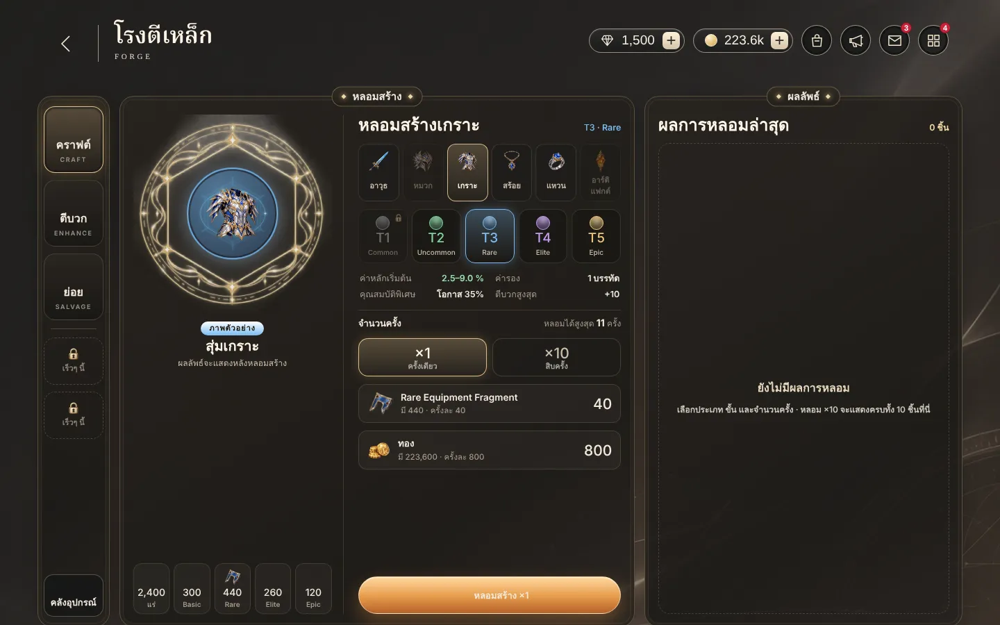
ก่อนหลอม · T1 ล็อกเพราะยังไม่มีสูตร Common
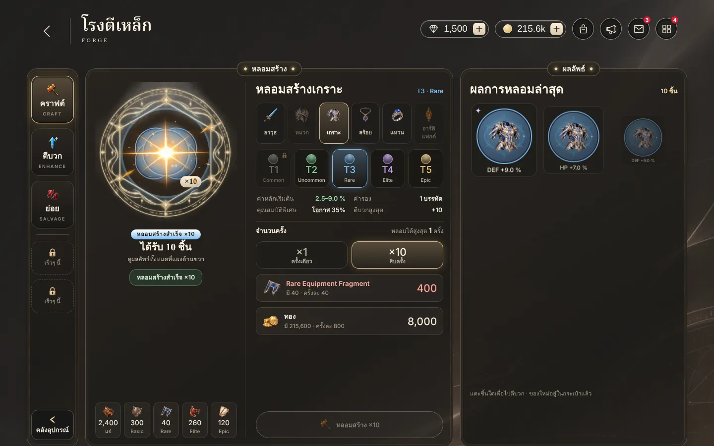
VFX หลอมสร้าง (burst + flash + sparks)
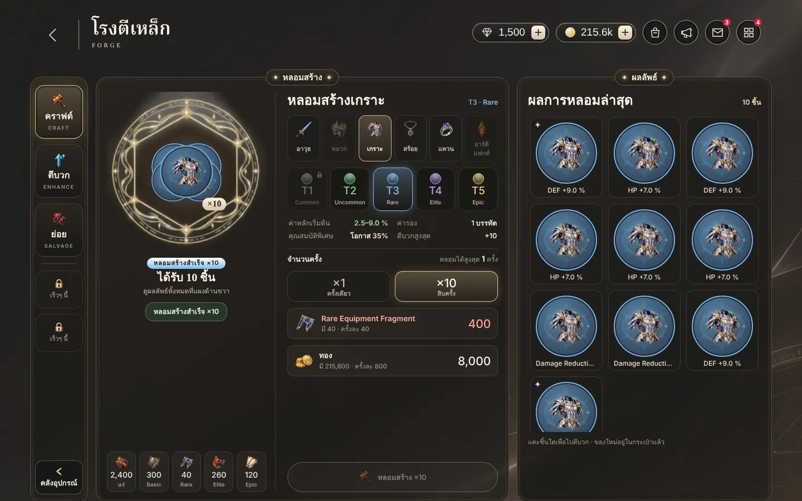
หลอม ×10 · ใช้เศษ 400 ทอง 8,000 ได้ 10 ชิ้น
ตีบวก
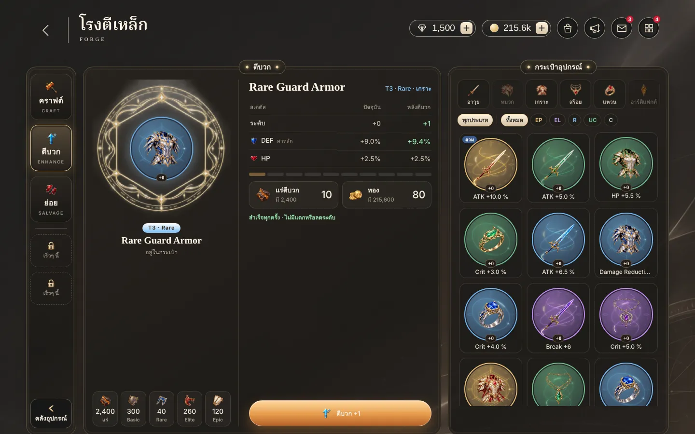
ตารางปัจจุบัน → หลังตีบวก
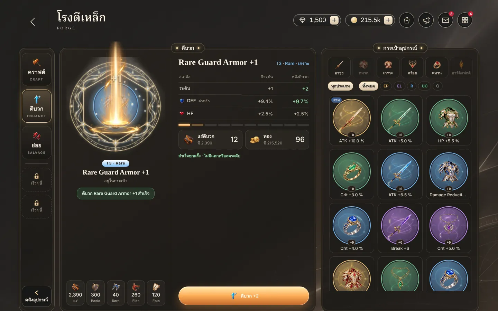
VFX ตีบวก (pillar + level ring + ตัวเลข +N)
ย่อย
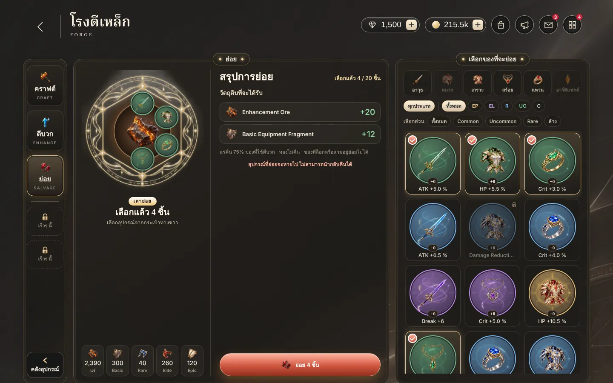
เลือกด่วน Uncommon · ของล็อกถูกข้าม
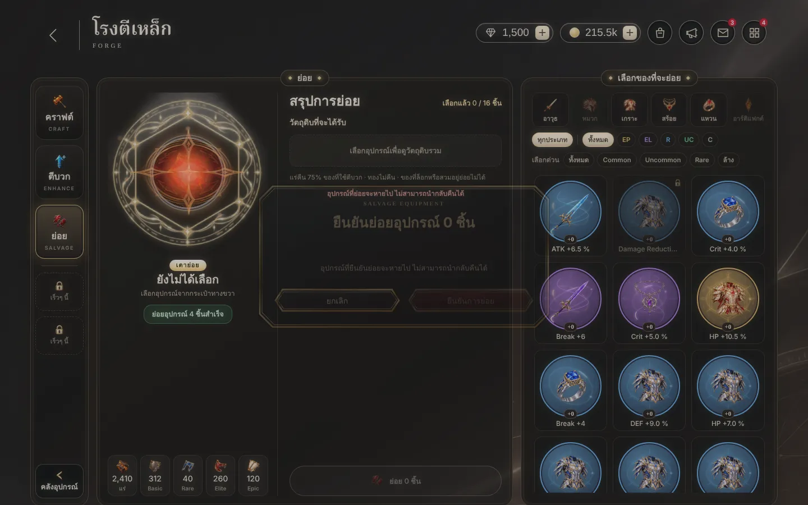
VFX ย่อย (breakthrough sheet + embers) หลังยืนยันในกล่องโต้ตอบ
ขนาดอื่น และหมวกในหน้าคลังอุปกรณ์
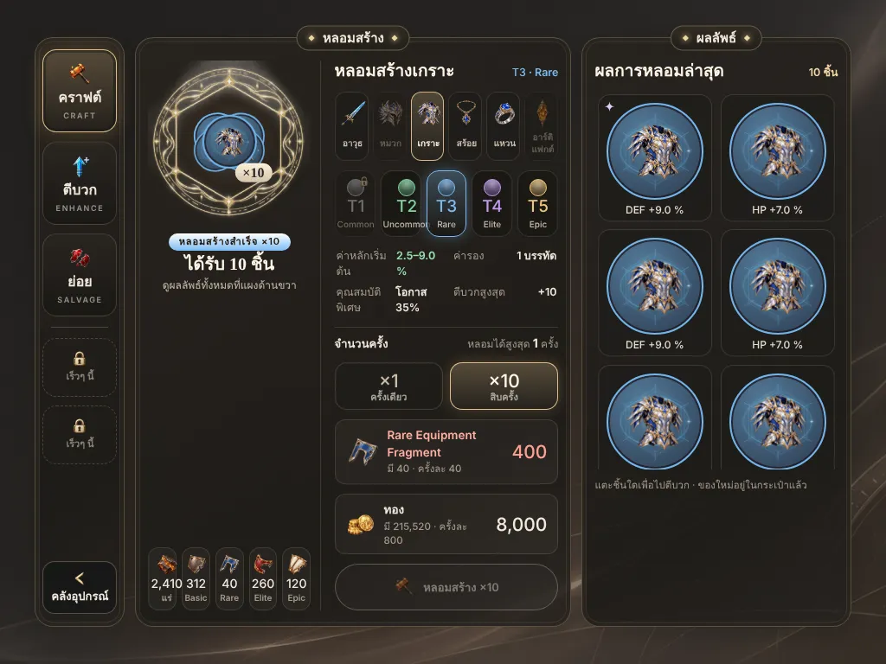
1024 × 768 (ไม่มี overflow แนวนอน)
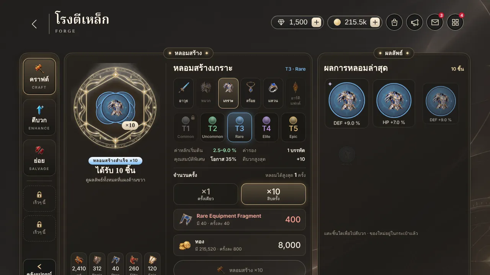
1280 × 720
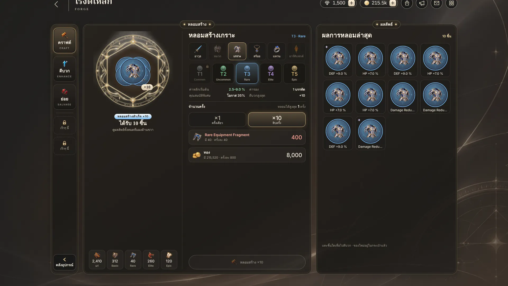
1920 × 1080
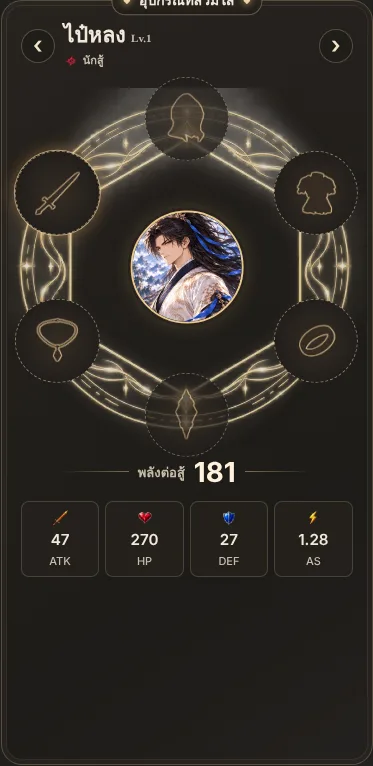
หน้าคลังอุปกรณ์ · ช่องหมวกใช้ภาพหมวก T1 ใหม่
ต่ำกว่า 1024 px ยังใช้เลย์เอาต์เดิม (นโยบาย Desktop ก่อน) · VFX ข้ามเมื่อเปิด reduced motion